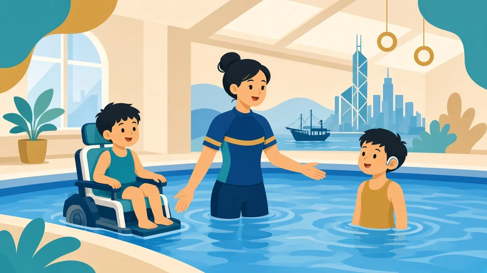

減少文字負擔，把動作拆清楚，讓孩子在水中累積成功經驗

特殊學習困難泛指整體智力可以在一般範圍，但在讀寫、數學或動作協調等特定能力上有持續明顯困難。常見包括讀寫障礙（文字解碼、拼寫與閱讀處理）與發展性動作協調障礙（DCD）（動作計劃、協調與學習新動作）。兩者可以並存，也可與專注或發展需要同時出現——教學應看孩子實際表現，而不是只看標籤。
溫馨提示：本頁為家長教育整理，供認識特殊需要與游泳教學方向參考，並非醫療診斷或治療建議。孩子個別安排請 WhatsApp 與教練商討。
讀寫障礙不是智力低、懶惰或欠缺動機。口語理解與創意可能很強，但長文字規則、技術名稱或書面評估會較吃力。水中動作本身未必受影響，但接收文字資訊、一次記住多個技術要求會較困難。
DCD 影響動作協調與學習，孩子可能顯得笨拙、節奏不穩，或難同時控制四肢與呼吸。這不代表不能學游泳——浮力環境反而適合用重複與分步建立動作模式。
一般不會。重點是少依賴長文字，多示範與分步。游泳甚至可以成為孩子建立自信的強項。
初學時四肢與呼吸協調確實較吃力。我們會拆細步驟、放慢要求，並留意池邊安全；進步往往靠重複與成功經驗堆疊。